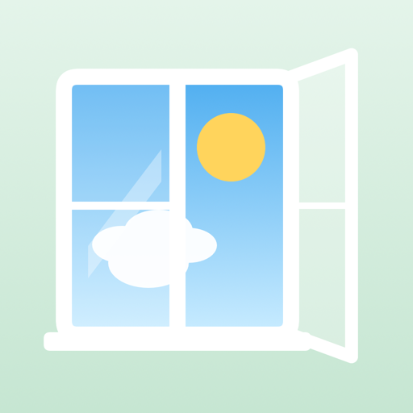

¿Abres la ventana?
What Dat Temp Dew revisa la temperatura, la humedad y el punto de rocío afuera, ahora y durante las próximas tres horas, y te da una respuesta clara.
Abre la ventana20 °C · 52% de humedad, y así sigue durante las próximas 3 horas.
Ábrela ahora, ciérrala a las 4 p.m.La humedad pasa del 60% cerca de las 4.
Mantenla cerradaDemasiada humedad por ahora. Podrías abrirla cerca de las 7 p.m.
Qué hace
- Una respuesta clara, según tu propio rango de comodidad (16–22 °C y humedad de 60% o menos, de forma predeterminada).
- Las condiciones de ahora y de las próximas tres horas, con el dato que cambia la respuesta resaltado.
- Un aviso antes de que sea hora de cerrar: «Ábrela ahora, ciérrala a las 4 p.m.».
- Widgets para la pantalla de inicio y la pantalla bloqueada, un control en el Centro de control y Siri.
- Alertas opcionales cuando conviene abrir o cerrar, con horas de silencio y la opción de silenciarlas 24 horas.
- Usa tu ubicación actual o la de tu casa.
Muy pronto en el App Store
Gratis, con propinas opcionales. Cualquier propina quita los anuncios.